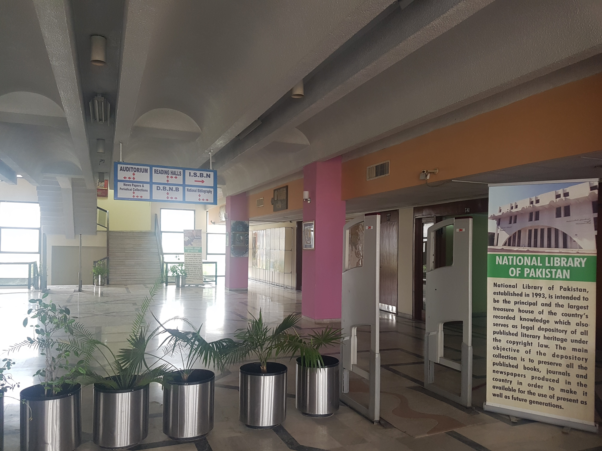

2017년 06월 14일
파키스탄
이슬라마바드 벌써 3일째이나 아무것도 한게 없다. 유명한 관광지에 아무데도 가보지 않았다. 그냥 방안에서 인터넷을 하고 빠른 인터넷으로 영화를 다운로드 받고 영화를 본정도가 다다. 일기도 소홀했다. 쓰기 귀찬았다. 어차피 한것도 없다. 이렇게 한국에 있을때 주말에 집에서 빈둥빈둥 보내는것과 똑같은 일과를 보내면서 귀한 여행 시간을 낭비해도 되는건가? 힘이든다. 밖에 나가면 너무 덥고 지친다. 너무 더운지역이라 돌아다니기가 너무 힘들다. 도시가 넓어서 대중교통을 이용해야하는데 한국처럼 잘 되어있는것도 아니고 어렵다. 파키스탄에서 이렇게 현지인들과 못 어울린 도시도 없는것 같다. 확실히 대도시라 그런지 사람들의 친절은 거의 없다. 그래도 인도 네팔보다는 사람들이 좋다. 어제 어떤 아저씨가 미니버스비를 대신 내주심.
모기향 냄새때문에 제대로 잘 수 없었던 밤을 보내고 아침에 눈이 떠졌다. 제대로 잔건지 모르겠다. 다행이 모기는 한방만 물렸다. 모기 물린곳을 가렵지 않게 만드는 방법을 알아냈다. 물린 부위를 뜨겁게 유지하면된다. 끓인 물컵을 10분 대고 있으면 크기도 작아지고 더이상 가렵지 않다. 이런방법을 왜 이제 알았을까? 30년만에 깨달은 방법이다.
이제 아침식사는 콘프레이크와 꿀과 우유와 바나나다. 라마단 기간에 아침식사는 이렇게 값싸게 떼우게 되었고 만족스러운 방법인것 같다. 어제 밤에 돌리고 잤던 토렌트 다운로드가 끝났다. 오예! 이슬라마바드 인터넷은 그동안 여행지중 제일 빠른것 같다. 다운받고 보니 잘못받았다. 가오갤 2를 받았어야 하는데 가오갤 1을 받았다. 오마이갓. 하루동안 고생해서 받았는데 잘못받음 .. 그래도 가오갤1이 너무 재미있어서 한번더 보기로 했다. 이침식사를 마치고 그냥 봤다.
중간에 점심시간이 되어서 어제 발견한 천국같은 식당. 라마단 기간에 문을연 식당 사보어 푸즈로 가기로 했다. 나와서 땡볕에서 한 10분은 걸었는데 지갑을 두고 나왔다. 제기랄! 다시 돌아왔다. 땀은 한바가지. 썬크림을 바르고 다시 나왔는데 지갑을 또 안가지고 나왔다. 썬크림만 바르고 나온것이다. 내가 좀 이상해진것 같다. 이슬라마바드와서 뻘짓이나 하고 앉아있고 말이다.
3일 만에 이곳 대중교통 시스템을 대충 파악했는데 미니버스가 있다. 지나가는 봉고차를 잡고 목적지를 물어본뒤 가면 된다. 이슬라마바드는 계획도시로 도로가 수직으로 잘 나있는데 미니버스를 이용해 직진만 하는 코스를 이용하기 딱 좋다. 복잡한 곳에 가기는 너무 어려움.
원래는 걸어가려고 했는데 미니버스를 타고 식당으로 갔다. 어차피 10루피밖에 안한다. 왠만하면 걷지말고 기회가 있을때마다 이 버스를 이용하는게 좋다. 100원밖에 안함. 파키스탄에서 가장 저렴하고 사용가치가 높은 비용이기때문에 돈아낄 생각하지 말고 버스를 이용하자.
새로운 여행 아이템: 블루투스 스피커 구매.
여행 2달동안 음악을 안들었다. 이제와서 갑자이 음악을 엄청많이 듣고 있다. 핸드폰 스피커로 듣자니 음질이 너무 구려서 못들어 주겠다. 특히 베이스가 너무 딸려서 듣기 힘들다. 선풍기라도 틀어놓으면 고음은 날라간다. 어제 전자매장을 돌아다니다가 우연히 만난 JBL GO 블루투스 스피커. 구매할까말까 고민하다가 그냥 나왔는데 하루 고민ㅎ하고 구매하기로 했다. 가격은 4천 루피. 흥정해서 3500루피로 구매할 예정이다. 여행중 적지 않은 돈이지만 사용가치가 그만큼 높을 제품이다. 게다가 무게도 130g으로 가볍고 작아서 여행용으로는 딱이다. 어제 청음도 해봤는데 나쁘지 않았다. 뭐라도 핸드폰 스피커보다는 낫겠지만. 로지텍 x100제품도 청음해봤는데 저음을 너무 부스팅해놔서 약간 뭉게지는감이 있었다. 그럼 팟캐스트 목소리 듣는데 문제가 생긴다. 다만 가격이 더 저렴함. 2500루피에 구매가능. 근데 부피랑 무게가 더 나간다. 결국 어제 JBL GO를 구매하기로 결정하고 먼저 매장으로 향했다. 3000가지 시도해봤지만 3500으로 흥정에 성공했다. 신난다. 새 제품을 사면 언제나 기대되고 설렌다. 오늘밤부터 음악 겁나 들어야겠다.
그뒤 도착한 사보어 푸즈. 점심에 문을 열줄 알았는데 3시에 연다고 한다. 오마이갓. 이왕 나온것 관광을 하기로 했다.
지도에 많은곳들을 찍어 놓았는데 어디 갈지를 모르겠다. 가장 가고 싶었던곳이 도서관이었나보다. 파키스탄에서 가장 크다는 도서관으로 향했다. 위치가 직진 방향이 아니라 약간 어렵지만 택시를 이용하지 않고 미니버스를 이용하기로 했다. 내가 있던 G7 방향에서 G5방향으로 직진 버스를 그냥 무작정 탔다. 결국 어떤 정류장에 내렸고 내셔널 라이브러리 오브 파키스탄 근처로 향하는 미니버스를 갈아탈 수 있었다. 생각보다 영어를 할 줄 아는사람들이 적어서 좀 고생을 했다.
그렇게 어렵게 도착한 도서관이 문이 닫혀있다. 멘붕. 하지만 곧 옆쪽에 입구가 있다는 사실에 안도했다. 도서관 건물 크기는 무척 컸지만 사람이 거의 없었다. 도서관에 도착했을때 배터리는 7%였다. 나는 1층에있는 링컨 센터?에서 충전을 하면서 그곳을 둘러봤는데 놀랍게도 미국 대사관의 후원을 받아 만들어진 공간이었다. 모든 책들이 미국 관련 책이었고 시설이 잘 되어있었다. 애플 컴퓨터도 있었고 킨들, 아이패드 등도 있었음. 나는 오랫만에 본 미국 잡지들을 구경하다가 퇴실시간이 되어서 나왔다. 배터리는 11%까지 밖에 충전을 못했다.
나는 책속에 둘러쌓인 자료실로 향했다. 3층에 있었지만 문이 잠겨있었다. 물어보니 안으로 들어갈 수 없고 책을 요청하면 사서가 가져다 준다고 한다. 책을 둘러보다가 이것저것 집어서 구경하는게 지식을 쌓는 방법중 하나인데 흥미로웠다. 파키스탄 사람들 아니 무슬림들은 꾸란 말고 다른책에 관심이 별로 없는걸까? 사람도 없고 책에 접근하는것도 까다롭다. 결국 자료실에는 가지 못했다. 그저 도서관 내부만 구경하고 밖으로 나왔다. 그래도 와보고 싶었던 도서관에 와서 기분 좋았다. 오늘 목표를 달성했다. 내일은 다른곳에 가보자. 내일은 동물원에 가봐야겠다.

한산했던 도서관 입구
돌아올때 다시 미니버스를 이용해서 오기가 너무 힘들었다. 밖이 너무 덥기도 했고 걷기 힘들어서 택시를 탓다. 150루피. 다시 사보어 푸즈로 왔다. 3시가 조금 넘었다. 시간이 그것밖에 안됐다니 흥미로웠다. 음식을 구매하고 숙소로 돌아왔다. 식사를 하면서 가오갤1을 마져 봤다. 역시 재미있었다. 그리고 가오갤 2도 연달아 봤다. 완전 캠버전인데다가 자막도 영어라서 별로 였다. 재미도 1만 못했다. 다 보고나니 밤이 되었고 허무했다. 블루투스 스피커로 음악을 틀었다. 역시 최고다. 빵빵하다. 베이스 랑 고음도 잘 들린다. 최고. 사길 잘했다. 정말. 내게 기쁨을 주면 이정도 금액은 아깝지 않은것! 오늘도 이렇게 하루가 다소 허무하게 지났다.